3.4. The Jupyter Notebook Interface¶
When a new Jupyter notebook opens, you will see the Jupyter notebook interface. Across the top of the notebook you see the Jupyter icon and the notebook name. You can click on the notebook name field and change the name of the notebook. Note that the file extension .ipynb is not printed in the file name field, but if you look in the Home tab, you will see that the notebook is saved with the .ipynb extension.
3.4.2. Code Cells¶
In code cells, you can write Python code, then execute the Python code and see the resulting output. An example of a code cell is shown below.

You can tell you are typing in a code cell because In [ ]: is shown to the left of the cell and the cell-type drop-down menu shows Code.
To run the Python code in a code cell push the [Run] button or type [Shift]+[Enter]. Hitting [Enter] when the cursor is inside a code cell brings the cursor down to a new line.
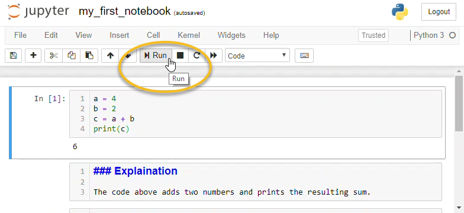
3.4.3. Output Cells¶
After a code cell is run, an output cell can be produced below the code cell. The output cell contains the output from the code cell above it. Not all code produces output, so not all code cells produce output cells. The results in output cells can’t be edited. If a code cell produces plots, charts or images, these outputs are shown in output cells.
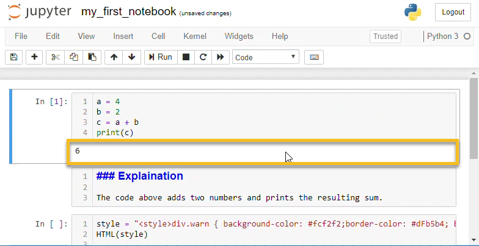
You can clear all the output cells and re-run code cells by selecting [Kernal] –> [Restart Kernal and Clear Output].
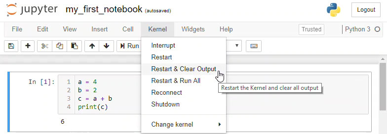
3.4.4. Markdown Cells¶
Markdown cells don’t contain Python code. Markdown cells contain text written in Markdown format. Text in markdown cells can be formatted to show bold or italic text. Tables, images, and lists can also be included in markdown cells.
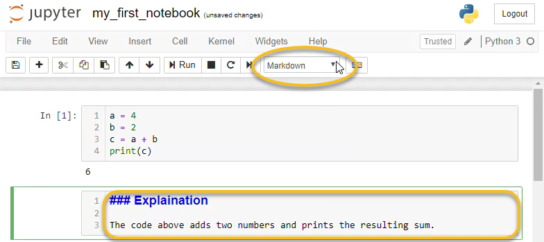
Markdown cells are used for documentation and explaining your code. The text in a markdown cell is not executed. Markdown cells can be formatted with a few special characters.
Markdown cells are run like code cells. The difference is that when markdown cells are run, the text is formatted (when code cells run, code is executed). Markdown cells are run by clicking the [Run] button or by pressing [Shift] + [Enter].
Text in markdown cells can be formatted using markdown syntax. An example of markdown syntax is putting an underscore before and after a word to cause the word to be formatted in italics.
3.4.4.1. Headings¶
Headings are created in markdown cells using the hash symbol #. One # is the largest heading. Four hashes #### is the smallest heading.
# H1 Heading
## H2 Heading
### H3 Heading
#### H4 Heading
3.4.4.2. Code Blocks¶
Code blocks can be inserted in Jupyter notebook markdown cells. For inline code blocks use the ` left quote character, the character to the left of the number [1] and above [Tab] on most keyboards.
This is inline code: ` ` ` Inline code block ` ` ` within a paragraph
For a separated code block use three ` left quote characters on one line, followed by the code block on separate lines. Terminate the separate code block with a line of three ` left quote characters.
```
Separated code block
```
The code in markdown cell code blocks do not execute when the markdown cell is run. A code block in a markdown cell is formatted when the markdown cell executes.
3.4.4.3. Bold and Italics¶
Bold and italic font is displayed by surrounding text with a double asterisk for **bold** and a single underscore for _italics_
**bold** produces bold
_italics_ produces italics
**_bold and italic_** produces bold and italic
3.4.4.4. Tables¶
Tables are displayed using the pipe | character, which is [Shift] + [\] on most keyboards. Columns are separated by pipes | and rows are separated by lines. After the header row, a row of pipes and dashes --- are needed to define the table.
| header1 | header 2 | header 3 |
| --- | --- | --- |
| col 1 | col 2 | col 3 |
| col 1 | col 2 | col 3 |
produces:
header1 |
header 2 |
header 3 |
|---|---|---|
col 1 |
col 2 |
col 3 |
col 1 |
col 2 |
col 3 |
3.4.4.5. Bullet Points and Lists¶
Bullet points are produced using the asterisk character *
* item 1
* item 2
* item 3
produces
item 1
item 2
item 3
Numbered lists are produced using sequential numbers followed by a dot. Indent sub-items with two spaces.
1. First item
2. Second item
3. Third item
1. sub item
2. sub item
1. sub-sub item
2. sub-sub item
produces
First item
Second item
Third item
sub item
sub item 1. sub-sub item 2. sub-sub item
3.4.4.6. Horizontal Rule¶
A horizontal rule is specified with three asterisks *** on a single line.
***
produces
3.4.4.7. Links¶
Hyperlinks are specified using a set of square brackets [ ] followed by a pair of parenthesis ( ) The text inside the square brackets will be the link, the link address goes in the parenthesis.
[Python.org](https://python.org/)
produces
3.4.4.8. Images¶
Images are embedded in Jupyter Notebook markdown using the exclamation point and square brackets ![ ], followed by the image file path in parenthesis ( ). If the image can not be displayed, the text in square brackets will be shown. The image can be in the same directory as the notebook, or a relative path can be specified. In this case, the image engineering.png is stored in the images directory, which is a subdirectory of the directory the notebook is saved in.

displays the image
3.4.4.9. LaTeX Math¶
LaTeX Math equations and symbols are rendered by markdown cells. A more extensive list of LaTeX commands can be found in the appendix.
$$ \int_{a}^{b} \frac{1}{x^2} dx $$
produces
3.4.4.10. html¶
Because Jupyter notebooks are rendered by web browsers, just about any HTML tag can be included in the markdown portion of a notebook. An example of an HTML tag is the <sup> </sup> tags that surround superscript text.
x<sup>2</sup>
produces
x2
Text can be colored using html <font> </font> tags
<font color=red>Red Text</font>
produces
Red Text
3.4.4.11. Warning Boxes¶
bootstrap style warning boxes can be included in Jupyter notebook markdown using <div> tags
<div class="alert alert-danger" role="alert">
<strong>Warning!</strong> Python lists start at 0
</div>
produces
3.4.5. Creating a new cell¶
You can create a new cell in a Jupyter Notebook by clicking the [+] button in the upper menu. Clicking the [+] button produces a new code cell below the active cell.
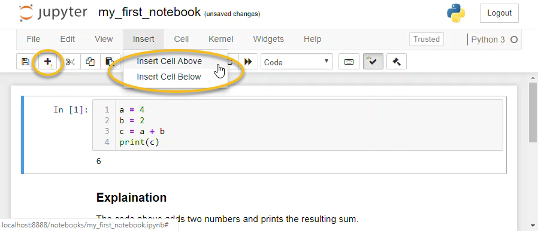
You can also create a new cell using Insert –> Insert Cell Above or Insert Cell Below. You can choose to insert a cell above or below the active cell.
3.4.6. Changing the cell type¶
The type of cell: code cell or markdown cell, is changed by clicking on a cell and selecting the cell type from the drop-down menu. Typing [Esc] + [m] changes the cell type to a markdown cell. Typing [Esc] + [y] changes the cell type to a code cell.
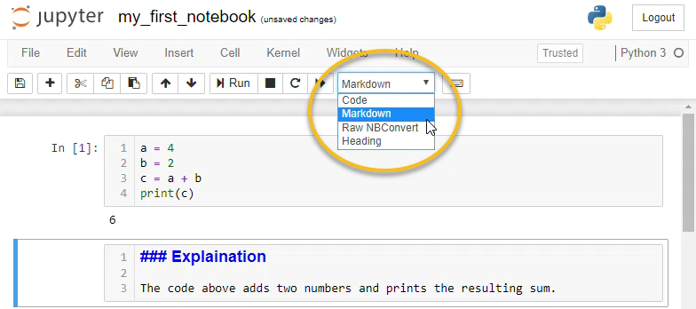
3.4.7. Saving a Jupyter Notebook¶
Jupyter notebooks can be saved using the save icon in the upper menu or by pressing [Ctrl] + [s].
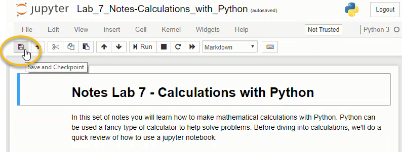
Jupyter notebooks can also be saved as a copy, similar to the Save As command common in many programs. To save a copy of a Jupyter notebook use File –> Make a Copy…
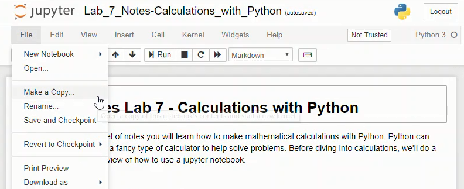
3.4.8. Renaming a Jupyter Notebook¶
Jupyter notebooks are renamed by clicking on the notebook name above the upper menu and typing a new name into the dialog box.
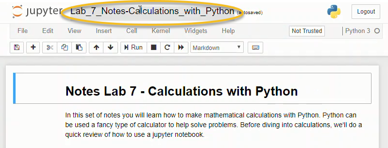
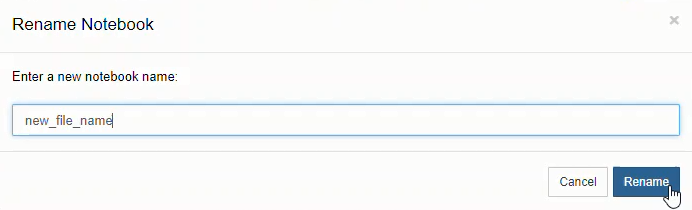
3.4.9. Downloading a Jupyter Notebook¶
Jupyter notebooks can be downloaded and saved using File –> Download As –> Notebook (.ipynb). Selecting this menu option will download the notebook as a .ipynb file.
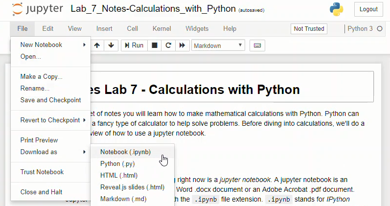
Note that when a .ipynb file is viewed in a text editor like notepad, the notebook is unformatted and looks like a confusing jumble of text. The notebook needs to be opened in a Jupyter notebook file browser in order for the code in the notebook to run and the markdown text to render.
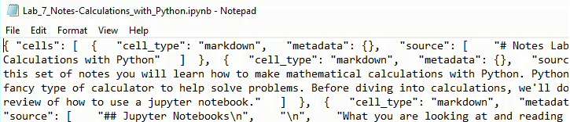
3.4.10. Saving Jupyter Notebooks in Other Formats¶
Jupyter notebooks can be saved in other formats besides the native .ipynb format. These formats can be accessed using the [File] –> [Download As] menu.
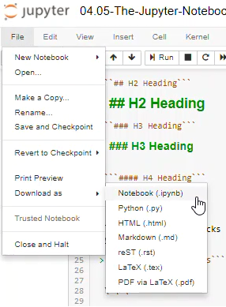
The available file download types are:
Notebook (.ipynb) - The native jupyter notebook format
Python (.py) - The native Python code file type.
HTML (.html) - A web page
Markdown (.md) - Markdown format
reST (.rst) - Restructured text format
LaTeX (.tex) - LaTeX Article format
PDF via LaTeX (.pdf) - a pdf exported from LaTeX, requires a converter
When a notebook is saved as a .py file, all text in markdown cells is converted to comments, and any code cells stay intact as Python code.